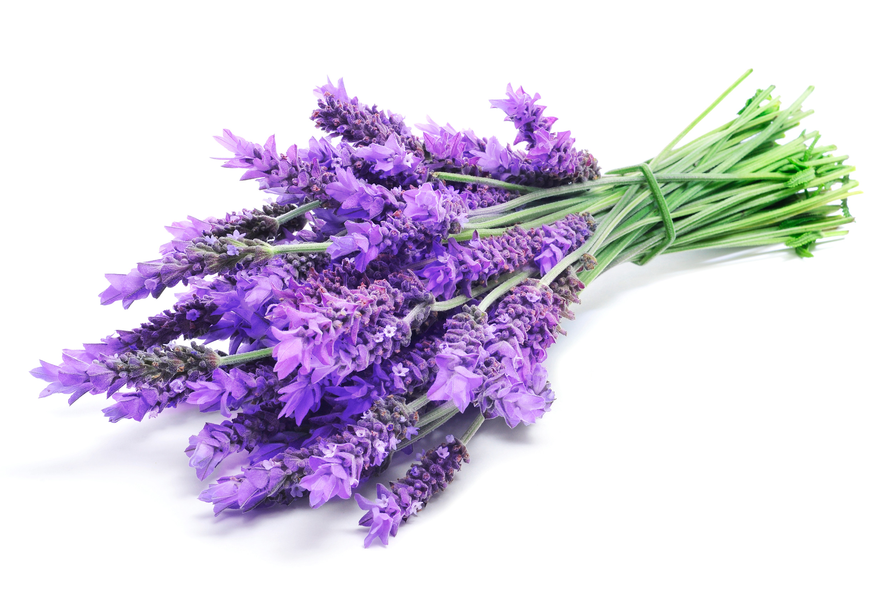

Эфирное масло
Мыло
Шампунь
Крем для лица дневной
Крем для лица ночной
Крем для тела
Скраб
Крем для рук
Пилинг
Бальзам для губ
Лаванда — что это за растение?
Это многолетняя культура семейства Яснотковые. Первоначально в естественных условиях произрастала в Африке, Азии, южной Европе. Благодаря своим полезным свойствам, красивым цветам и сильному приятному аромату теперь распространена повсеместно: выращивается в полях, садах и палисадниках по всему миру. Существует примерно 25-30 различных видов этого растения.
Лаванда — очень полезное, широко применяемое растение, поэтому его высаживают и культивируют в промышленных масштабах. В Европе, например, знамениты огромные лавандовые поля провинции Прованс. В наших краях эта культура повсеместно выращивается в Крыму, а также во многих районах России, Украины, Молдовы, и даже на Алтае и Урале, в Сибири.
Свойства лаванды
Цветки лаванды обладают мочегонным, противосудорожным и седативным действием. Лавандовое масло обладает антисептическим и бактерицидным свойствами. Кроме того, лавандовое масло способствует активному заживлению ран (особенно химических ожогов) с полной регенерацией клеток эпидермиса.
При его приеме снижается черепное кровяное давление, снимается бронхоспазм, повышается тонус кишечника, увеличивается кислотность желудочного сока, улучшается аппетит.
Цветки лаванды действуют успокаивающе на центральную нервную систему, а также на нервную систему дыхательных путей. Благодаря наличию дубильных веществ они обладают закрепляющим действием при поносах, особенно протекающих с явлениями брожения. В какой-то степени цветки лаванды могут быть и желчегонным средством.
Для чего выращивается лаванда?
Область применения этой культуры чрезвычайно широка. Её используют:
- для производства косметики и парфюмерии;
- в медицине;
- в кулинарии;
- для декоративного выращивания;
- для домашнего обихода.
Особенно ценится лавандовое масло. Имеется множество сортов духов и прочих ароматизаторов, где варьируется процент его добавления для получения различных ароматов. Ароматические отдушки добавляются в стиральные порошки, моющие средства, дезодоранты и другую продукцию косметического производства. Сильный, стойкий, элегантный аромат лаванды пользуется огромной популярностью у мужчин и женщин всех возрастов.
Медики ценят антисептические, антибактериальные и спазмолитические свойства лавандового масла. Его применяют как лекарство, а также в ароматерапии — для различных ванн, СПА-процедур, массажа. Ароматические лампы с успехом используют в косметических салонах и домашних условиях.
Очень многие хозяйки любят держать в квартирах и домах высушенные пучки лаванды.Это замечательный естественный ароматизатор, а также прекрасное средство для отпугивания таких домашних вредителей, как мыши и моль.
Кроме промышленного выращивания, лаванду охотно высаживают в садах и на дачных участках. Её фиолетовые цветы создают великолепный интерьер, служат живым бордюром, ароматизируют воздух. Но помимо декоративного украшения, эти растения отлично служат защитой огородных посадок от колорадского жука и грызунов.
Лаванду широко используют в косметологии, благодаря ее регенерирующим и успокаивающим свойствам, чаще всего – в форме эфирного масла или экстрактов, однако высушенные цветки лаванды также используются для создания мягких скрабов или настоек. В первую очередь лаванда – превосходный природный антисептик.
Лаванда выращенная в Провансе
- Email: lavanda@test.com
- Телефон в России: +7(111)111-11-12
- Адрес производства:
Франция
Прованс
Ле-Шаффо-Сен-Жюрсон